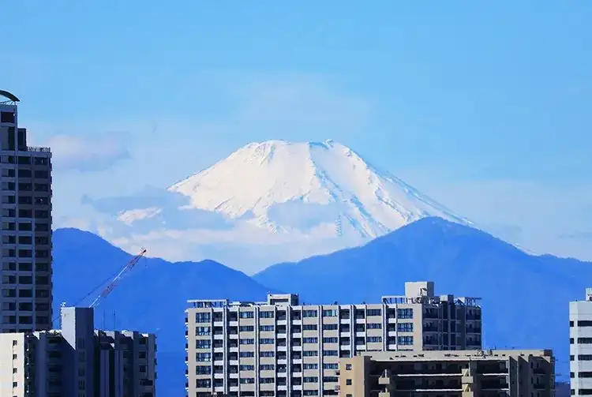

Fuchushi, Tokyo: things to do, food and stays
Fuchushi · Tokyo
Fuchushi
Highlighted on the Tokyo map.

Sights
Dining
Teuchi Kage Hinata
手打ち 陰日向

Noodle restaurant in Fuchushi, Tokyo.
Chuka Soba Hirai
中華蕎麦 ひら井

Noodle restaurant in Fuchushi, Tokyo.
Chuka Soba Fukumimi
中華そば ふくみみ

Noodle restaurant in Fuchushi, Tokyo.
Men Soken Kurenai
麺創研 紅

Noodle restaurant in Fuchushi, Tokyo.
Ramen Jiro Fuchuu ten
ラーメン二郎 府中店

Noodle restaurant in Fuchushi, Tokyo.
Ramen Eiji
ラーメン英二

Noodle restaurant in Fuchushi, Tokyo.
Itsumiya
いつみ屋

Noodle restaurant in Fuchushi, Tokyo.
Chuka Soba Kokoro
中華そば 心

Noodle restaurant in Fuchushi, Tokyo.
Ramen Rouge

Noodle restaurant in Fuchushi, Tokyo.
Ramen Ookuniya
ラーメン 大國家

Noodle restaurant in Fuchushi, Tokyo.
Chuka Soba Hibiki
中華そば ひびき

Noodle restaurant in Fuchushi, Tokyo.
Lion Fuchuu honten
らいおん 府中本店

Noodle restaurant in Fuchushi, Tokyo.
AONEKO
焼きあご煮干しらぁめん 碧猫

Noodle restaurant in Fuchushi, Tokyo.
Le Conte Reservation
wine restaurant LE CONTE

European restaurant in Fuchushi, Tokyo.
Chinese Cuisine Sincerity
しんせらてぃ

Chinese or Asian restaurant in Fuchushi, Tokyo.
Koguma-ya Coffee Ten
こぐま屋珈琲店

Cafe in Fuchushi, Tokyo.
Ramen Fuchuya
ラーメン 府中家

Noodle restaurant in Fuchushi, Tokyo.
Mon Amour Seifuu dou honten
モナムール 清風堂本店

Cafe in Fuchushi, Tokyo.
Morgen bekarai
モルゲンベカライ

Sweets and bakery shop in Fuchushi, Tokyo.
Tokyo Ichigo Cafe
東京いちごカフェ

Cafe in Fuchushi, Tokyo.
Sunaba
砂場

Noodle restaurant in Fuchushi, Tokyo.
Tonkatsu Kappou Yasui Meat
とんかつ割烹 やすいみ～と

Meat restaurant in Fuchushi, Tokyo.
Curry Dining Chai
カレーダイニングChai

European restaurant in Fuchushi, Tokyo.
Noko Tonkotsu Ramen Daruma Ikka Fuchu bunten
濃厚とんこつラーメン だるま一家 府中分店

Noodle restaurant in Fuchushi, Tokyo.
Calorie House
カロリーハウス

Meat restaurant in Fuchushi, Tokyo.
Heiji no Udon Reservation
平次のおうどん

Noodle restaurant in Fuchushi, Tokyo.
Restaurant Hassuru
レストラン ハッスル

European restaurant in Fuchushi, Tokyo.
BAKERY & BURGER JB's TOKYO Fuchuu ten
BAKERY & BURGER JB's TOKYO 府中店

Izakaya or bar in Fuchushi, Tokyo.
Tama Ya Shokudo
たま家食堂

Meat restaurant in Fuchushi, Tokyo.
Ton Kichi
とんきち

Meat restaurant in Fuchushi, Tokyo.
Chuka Soba Tamakawa
中華そば たま河

Noodle restaurant in Fuchushi, Tokyo.
Thai Kenkyujo Fuchuu ten
タイ料理研究所 府中店

Chinese or Asian restaurant in Fuchushi, Tokyo.
Maruyasu
マルヤス

Japanese restaurant in Fuchushi, Tokyo.
Yamacho Soba Bubaigawara ten
山長そば 分倍河原店

Noodle restaurant in Fuchushi, Tokyo.
RAINBOW SPICE MASALA STALL

Chinese or Asian restaurant in Fuchushi, Tokyo.
baikingu restaurant touhoku bokujou Reservation
バイキングレストラン東北牧場

European restaurant in Fuchushi, Tokyo.
Stay
Hotel Keyaki Gate Tokyo Fuchu
ホテル ケヤキゲート 東京府中

Hotel Keyaki Gate Tokyo Fuchu is a hotel in Fuchushi, Tokyo.